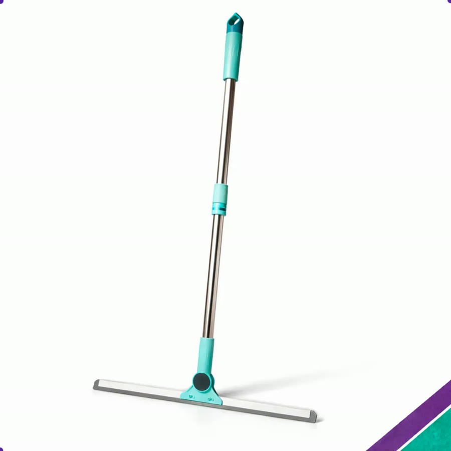
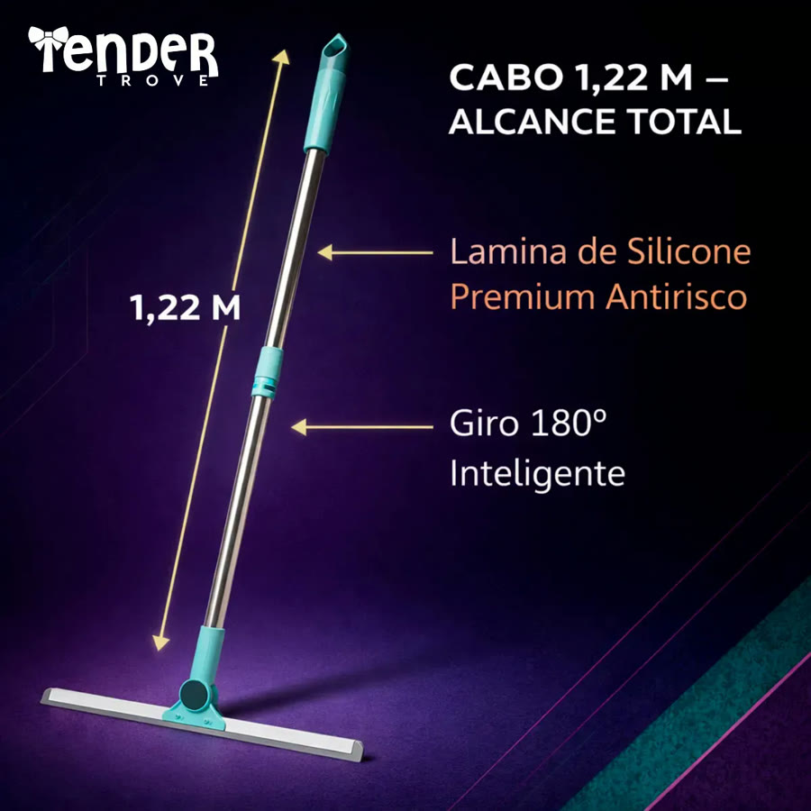
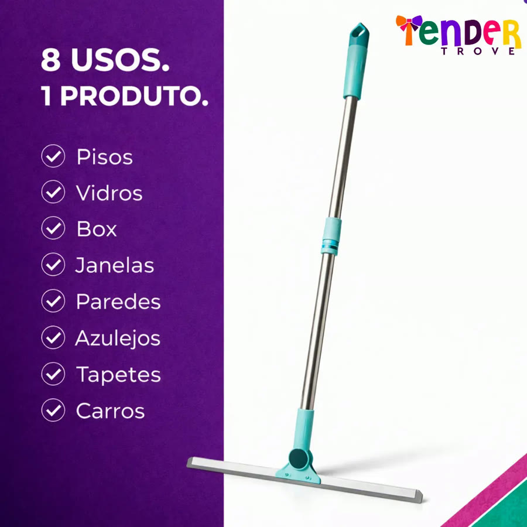
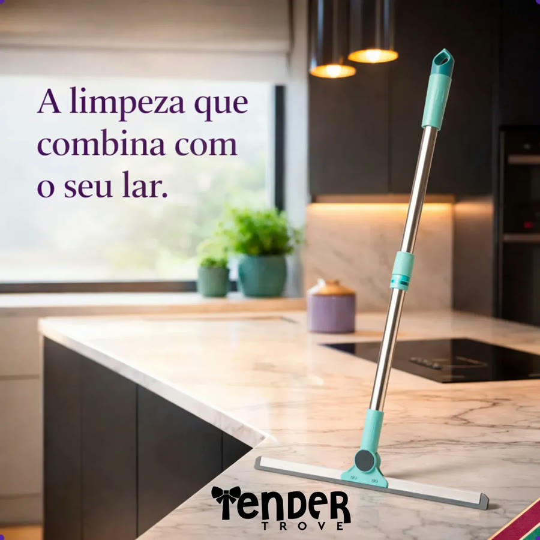
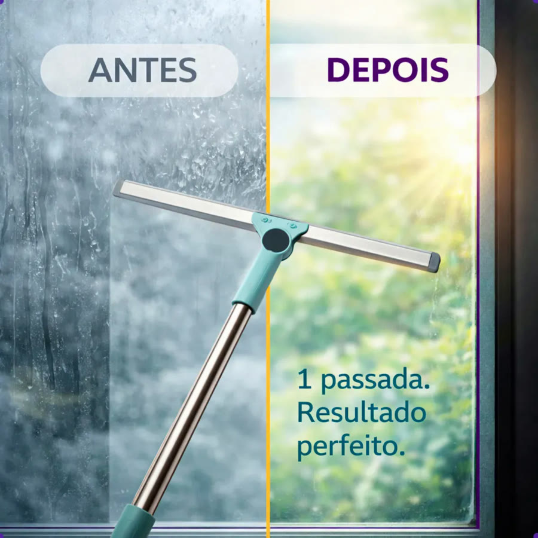
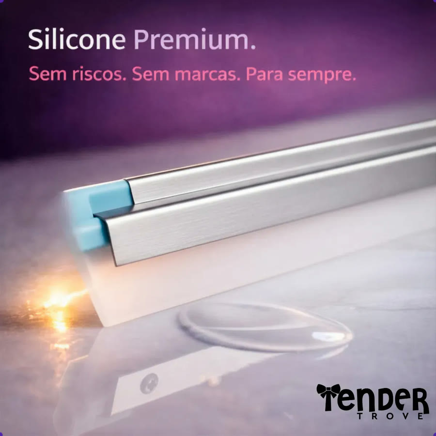

Achado nº 54
Rodo de silicone com articulação que gira 180°






O que diz a página oficial do produto
- É um rodo da marca Tender Trove com lâmina de silicone e articulação que gira 180 graus
- A lâmina tem 50 cm e o cabo de alumínio tem 122 cm
- Segundo o anúncio, a articulação alcança cantos, embaixo dos móveis e superfícies inclinadas
- Segundo o anúncio, seca em uma passada e o silicone não risca a superfície
- Segundo o anúncio, serve para pisos, vidros, box, janelas, paredes, azulejos, tapetes e carros
- No Mercado Livre, tem nota 4,3 com mais de 4.800 avaliações e mais de 10 mil vendidos
Link de afiliado: se você comprar por ele, a Achadaria pode receber uma comissão, sem custo extra para você. Preço, estoque e entrega são da loja e podem mudar; confira lá antes de comprar.